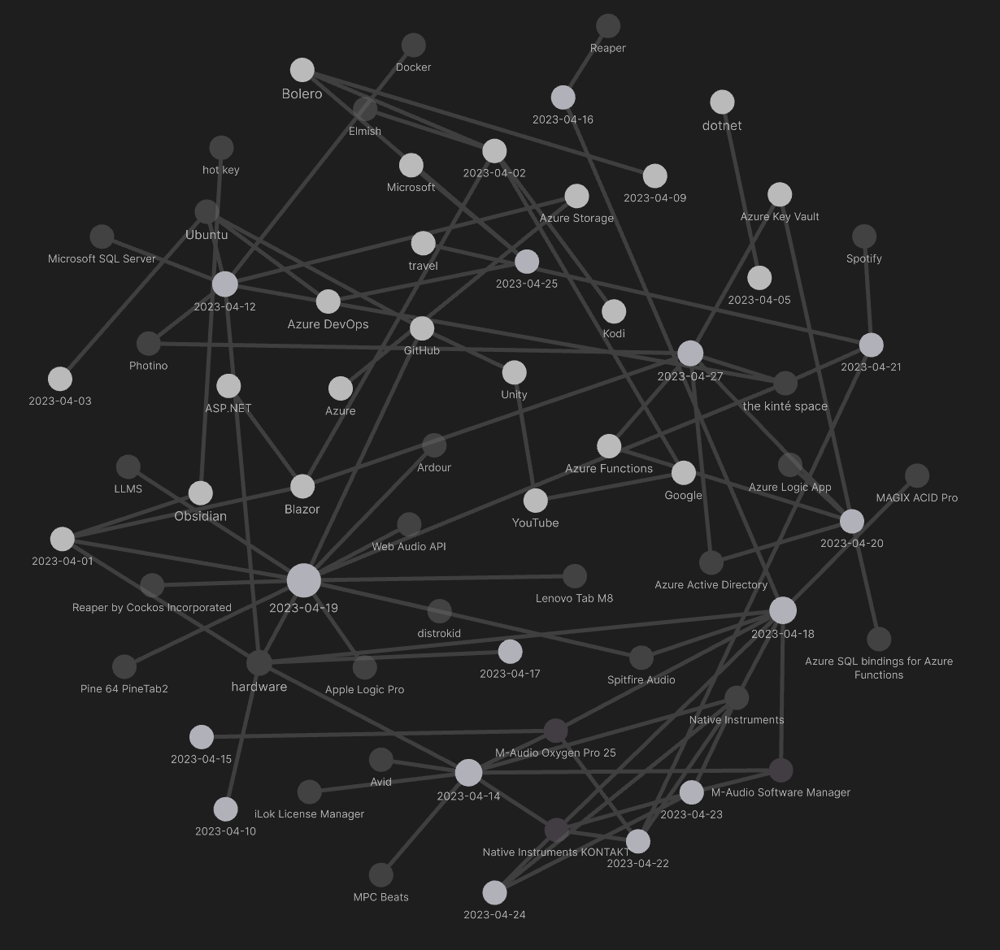
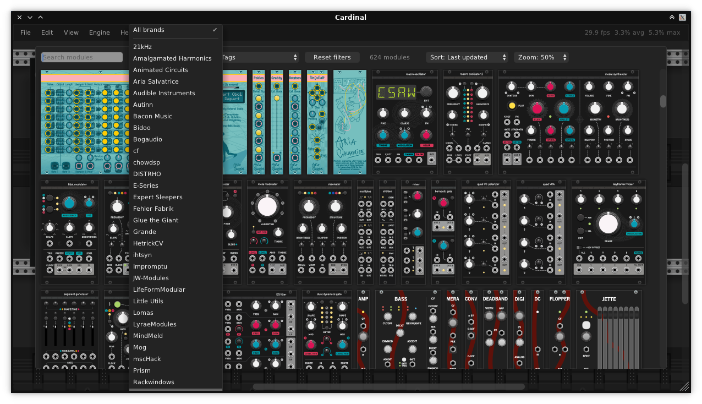

studio status report: 2023-04
month 04 of 2023 was about slower progress on Songhay.Player.ProgressiveAudio and some Studio upgrades
The “Songhay.Player.ProgressiveAudio release 6.0.0” project is finally looking like it is winding down. The JSON data is now at the surface of the UI and what remains is installing a CSS strategy that is similar to the old one but uses CSS variables. There is a currently open issue that will capture the work done here.
The big distracting upgrade in the Studio includes the acquisition of an M-Audio Oxygen Pro 25 MIDI controller. A move like this was held back for years and I finally made that move! The other major piece missing from Studio life is centered upon the use of Blender.
The Obsidian graph for this month lights up with music technology references:

There should be some life left for me after the re-release of kintespace.com—and such a life will require more personal music projects of mine and motion-picture soundtracks.
Selected Studio notes:
[[hardware]]: I went with an M-Audio 25-key MIDI controller because it is one of the few with weighted after-touch keys
According to sweetwater.com, there are four 25-key controllers:
M-Audio stands out because:
- it has the most beat pads (16 of them)
- it has after-touch as well as weighted keys M-Audio 25-key drawbacks:
- buttons are “clicky” plastic
- might be too heavy for travel (because the weighted keys)
- cannot select, arm, mute or solo tracks
- only has one fader
According John Mike, the M-Audio 25-key controller comes standard for students of music production:

This Was My First Midi Controller! |M Audio Oxygen 25 MK2 #ThrowbackThursdays|
Nice video describing setup:

M-Audio Oxygen Pro - USB Connection, Getting Started, and DAW Setup Tutorial
[[F♯]]: an object that implements .map is a functor…
…and, according to this guy:

Monad - FunFunFunction #21
In the world of [[dotnet|.NET]], this means that the extension methods .Select and .SelectMany make implementations of IEnumerable<T> functors and monads simultaneously and respectively.
[[F♯]]: the Brian Beckman definition of a monoid

Brian Beckman: Don't fear the Monad
Microsoft’s Brian Beckman uses a 12-hour clock to explain what a monoid is:
A monoid is a collection of things plus a rule for combining the things—and that rule obeys some rules.
—Brian Beckman [📹 watch ]
The rule obeys associativity and the existence of a “special member” (unit? …“zero”?—I think he is referring to id …fun x -> x).
…In view of this Brian Beckman quote we must remember that x: int is the same as $x \in \Z$
Beckman reminds us that the functor is from category theory:
In mathematics, specifically category theory, a functor is a mapping between categories. Functors were first considered in algebraic topology…
[[hardware]]: the mssql-tools package cannot be installed on Ubuntu >20.04
The prerequisites clearly state:
You must have an Ubuntu 20.04 machine with at least 2 GB of memory.
This direct statement implies that that the mssql-server cannot be installed on later versions of Ubuntu. The characteristic error message follows:
$ sudo apt-get install -y mssql-server
The following packages have unmet dependencies:
mssql-server : Depends: libldap-2.4-2 but it is not installable
E: Unable to correct problems, you have held broken packages.
An obscure forum post suggests this situation is real:
Additionally, a table published by Microsoft suggests that support is only for the LTS version of [[Ubuntu]]:
CTE hierarchy recursion example
DECLARE @Employees
TABLE (
[ID] INT
, [NAME] VARCHAR(32)
, [ROLE] VARCHAR(32)
, [MANAGER_ID] INT
)
INSERT INTO @Employees
VALUES
( 7369, 'SMITH', 'CLERK', 7902 )
, ( 7499, 'ALLEN', 'SALESMAN', 7698 )
, ( 7521, 'WARD', 'SALESMAN', 7698 )
, ( 7566, 'JONES', 'MANAGER', 7839 )
, ( 7654, 'MARTIN', 'SALESMAN', 7698 )
, ( 7698, 'BLAKE', 'MANAGER', 7839 )
, ( 7782, 'CLARK', 'MANAGER', 7839 )
, ( 7788, 'SCOTT', 'ANALYST', 7566 )
, ( 7839, 'KING', 'PRESIDENT', NULL )
, ( 7844, 'TURNER', 'SALESMAN', 7698 )
, ( 7876, 'ADAMS', 'CLERK', 7788 )
, ( 7900, 'JAMES', 'CLERK', 7698 )
, ( 7902, 'FORD', 'ANALYST', 7566 )
, ( 7934, 'MILLER', 'CLERK', 7782 )
;WITH EMPLOYEE_CTE AS (
-- seed record:
SELECT
[ID]
, [NAME]
, [ROLE]
, [MANAGER_ID]
, [MANAGER_NAME] = CAST('N/A' AS VARCHAR(32))
FROM @Employees
WHERE [MANAGER_ID] IS NULL
UNION ALL
-- recursive statement:
SELECT
emps.[ID]
, emps.[NAME]
, emps.[ROLE]
, emps.[MANAGER_ID]
, [MANAGER_NAME] = cte.[NAME]
FROM
@Employees emps
--constrain and recur:
INNER JOIN EMPLOYEE_CTE cte
ON cte.[ID] = emps.[MANAGER_ID]
)
SELECT * FROM EMPLOYEE_CTE
There are two important things to remember:
EMPLOYEE_CTEis filling with every iteration.- The
INNER JOINconstrains recursion and drives recursion.
Also, to report on the hierarchy of a specific manager change the WHERE [MANAGER_ID] IS NULL constraint to WHERE [ID] = <ID of employee>.
[[hardware]]: external SSDs 💾
The Studio needs to use external SSDs to support large musical instrument libraries, compensating for the lack of dedicated internal storage on… Previously I assumed this need would come from working on video projects. The following is an introduction:

How to Build Your Own High-Performance Portable SSD
finally, VCV packaged as an open source VST plugin 🎊 #to-do

Cardinal is a free and open-source virtual modular synthesizer plugin, available as CLAP, LV2, VST2 and VST3 audio plugin for FreeBSD, Linux, macOS and Windows.
Plus AU and JACK or Native audio standalone for some systems.
It is based on the popular VCV Rack but with a focus on being a fully self-contained plugin version.

Cardinal is a brand new open-source modular plug-in built on top of VCV Rack
sketching out development projects
The current, unfinished public projects on GitHub:
- finish the “
Songhay.Player.ProgressiveAudiorelease 6.0.0” project - start the “
SonghayCore📦✨ release 6.0.5” project
The proposed project items:
- add kinté space presentations support to
Songhay.Player.YouTube🔨 🚜✨ - replace the Angular app in
http://kintespace.com/player.htmlwith a Bolero app 🚜🔥 - generate Publication indices from LiteDB for
Songhay.Publications.KinteSpace - generate a new repo with proposed name,
Songhay.Modules.Bolero.Index✨🚧 and add a GitHub Project - switch Studio from Material Design to Bulma 💄 ➡️ 💄✨